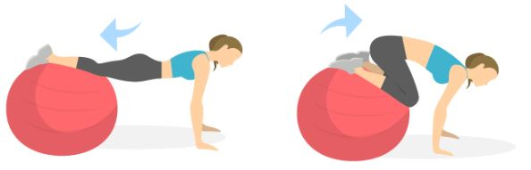

Knee Tuck

Lie on a bench and pushes a barbell upwards with both hands from chest level until the arms are straight, then lowers it again.
Plank

Lie on a incline bench, approximately 15 to 45 degrees, and pushes a barbell upwards with both hands from chest level until the arms are straight, then lowers it again.
Reverse Crunch

Keep your body in a straight line from head to toe without sagging in the middle or arching your back. Exhale as you begin contracting your chest muscles and pushing back up through your hands to the start position. Do not lock out the elbows; keep them slightly bent.
Situps

Keep your body in a straight line from head to toe without sagging in the middle or arching your back. Exhale as you begin contracting your chest muscles and pushing back up through your hands to the start position. Do not lock out the elbows; keep them slightly bent.